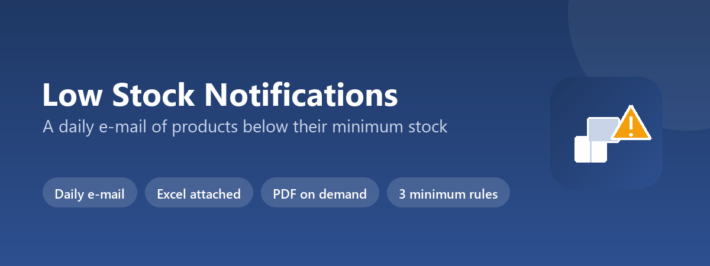

Sends a daily e-mail of the products below their minimum stock, with the full list attached as an Excel file, and gives you the same report on demand.
Choose who receives the alert and how the minimum is defined, and each company gets one e-mail a day listing what is running low. The e-mail shows the ten most urgent products and the complete list travels with it as an Excel file. The same list can be printed, downloaded or sent at any time from Inventory, Reporting, Low Stock.
📧 Daily e-mail alertEvery day the chosen users receive the products below their minimum, most urgent first, with the complete list attached as an Excel file. |
📊 Report on demandPrint the list as a PDF, download it as Excel or send the e-mail right now from the Inventory reporting menu. |
🎯 Three minimum rulesUse one minimum for all products, a minimum set on each product, or the minimum of your reordering rules. |
📦 On hand or forecastCompare the minimum with what is physically in stock, or with the forecast that counts incoming and outgoing goods. |
📍 Choose the locationsCount all the warehouses of the company, or only the stock locations you select. |
📋 Complete stock pictureEach line shows the vendor, location, on hand, free to use, incoming, outgoing, forecast, minimum and missing quantity. |
Odoo 18.0 • Community & Enterprise • depends on Inventory • Licence LGPL-3
Odoo implementation and development. thecodelegion.com